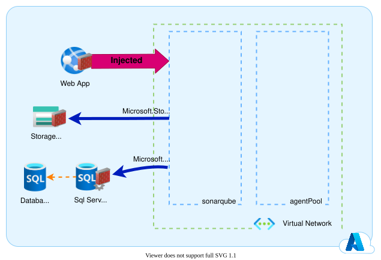

Déployer Sonarqube sur des services managés Azure.
Important
This article written in French will be translated into English in the next few days. stay tuned ;-).
Dans le cadre de mes différentes missions clients j'ai eu le besoin de déployer l'outil Sonarqube. Sonarqube propose ses images sur docker hub. En même temps les Azure WebApp permettent d'exécuter des conteneurs docker. Pourquoi ne pas faire tourner Sonarqube sur une Azure WebApp ?
Pourquoi ?
Sonarqube est une plateforme web de reporting qualité. Cette plateforme permet de collecter les rapports d'analyse de code et d'exécution de tests automatisés (Couverture de code). A partir de ces éléments, elle est capable d'attribuer une note qualité à votre code. Pour cela, Sonarqube a besoin d'une base de données afin de stocker les résultats d'analyse.
Dans un contexte professionnel nous allons souhaiter que :
- Sonarqube soit suffisamment disponible pour que chaque développeur et chaque tech-lead puisse observer la qualité du code.
- le code source accessible dans Sonarqube ne puisse pas être exfiltré.
- l'exploitation de cette plateforme soit la plus simple possible afin de limiter les coûts de maintenance.
Les services managés Azure: Azure WebApp et Azure SQL database, offrent de très bonnes SLA et permettent de réduire les coûts d'exploitation en délèguant une bonne partie de celle-ci à Microsoft.
L'architecture
Il existe déjà sur le github de microsoft un quickstart template ARM permettant de déployer Sonarqube sur une Azure WebApp avec une base de données Azure SQL database. Les soucis de ce quickstart sont les suivants :
- il ne permet pas de déployer la dernière version de Sonarqube (8.9 LTS),
- il n'isole pas au niveau réseau. Il y a donc un risque d'exfiltration du code.
- il ne permet pas de conserver la configuration et les plugins de Sonarqube en cas d'incident sur l'Azure WebApp.
Je vous propose donc de revoir un peu l'architecture afin de blinder tout cela :

-
On va ajouter un Storage Account qui contiendra les extensions et les données de Sonarqube afin de garantir la résilience de la solution. En cas de dysfonctionnement de l'Azure WebApp, les données Sonarqube ne seront pas perdues. De plus, si l'on doit migrer la solution sur un autre cloud provider, nous serons en capacité de faire cette migration sereinement.
-
Ensuite, on va créer un Virtual network et un Subnet dans lequel on va intégrer notre Azure WebApp. On va ajouter les services endpoints du Storage Account et du Sql Server à notre Subnet. Ainsi notre Azure WebApp pourra communiquer avec les autres services managés sans passer sur internet et donc sans risque d'exposition à une potentielle attaque.
-
Enfin, on va mettre en place des règles firewall pour empècher tout accès en dehors de notre Virtual Network.
- on va restreindre le Storage Account au Subnet de notre Azure WebApp.
- on va faire de même pour l'Azure Sql Server.
- on va restreindre l'Azure WebApp aux autres Subnet de notre Virtual Network.
Résultat
Vous trouverez ci-dessous le template ARM permettant de déployer rapidement un Sonarqube isolé et résilient.


Références
Remerciements
- Michael Maillot : pour la relecture
- Marine Perroteau : pour la relecture
- Samy Mameri : pour la relecture
- Fabrice Weinling : pour la relecture
Rédigé par Philippe MORISSEAU, Publié le 27 Septembre 2021